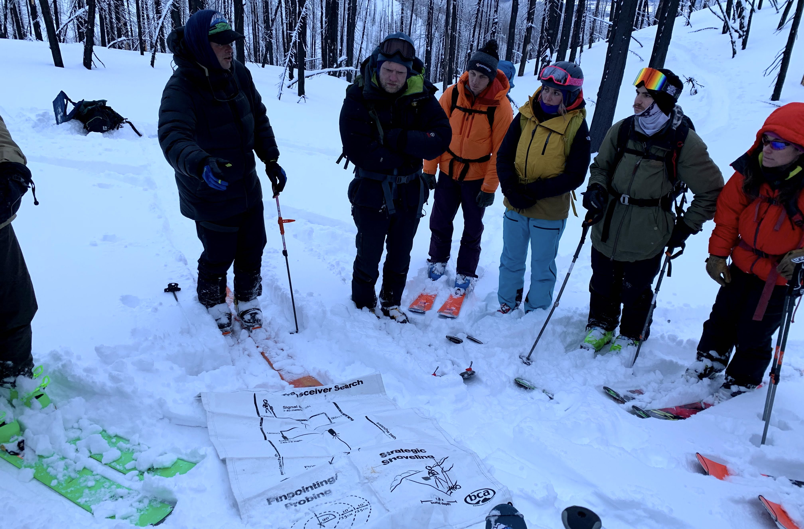
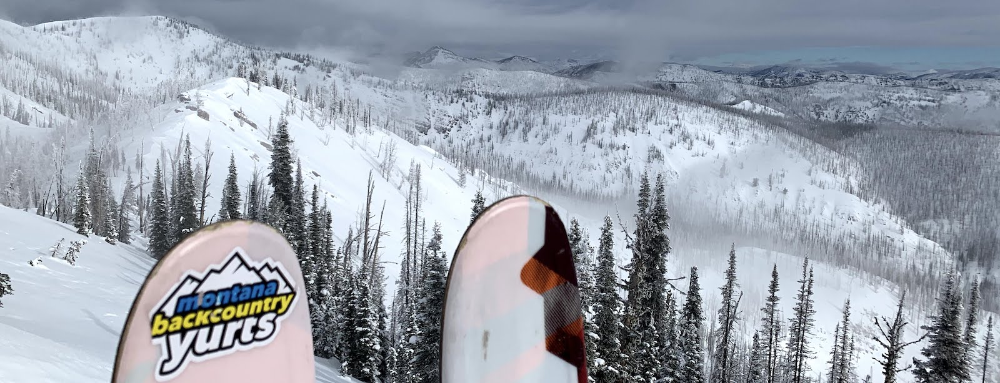
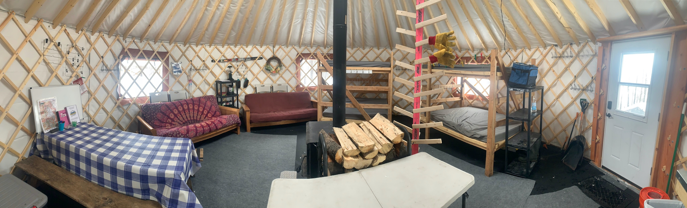
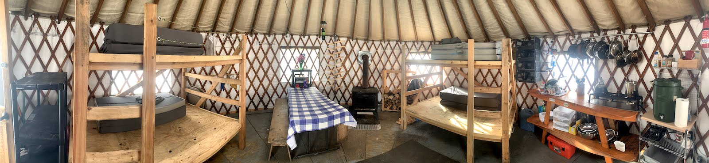

The 24' Alpine Yurt sleeps up to 10 people on 2 full-size bunk beds and 2 futon couches.
20' Lupine Yurt sleeps up to 8 people on 2 full-size bunk beds.
At Yurtski we pride ourselves in providing unforgettable backcountry skiing experiences. Our goal is for people to enjoy the beauty of the Swan Range safely and in comfort while getting some incredible powder turns. See the video below for a glimpse of life at YurtSki, and then get a group together for an experience that will last a life time!
A glimpse of life at YurtSki from Reece Brandon.
Throughout the season we also offer a number of avalanche classes and backcountry skiing clinics to both introduce people to the wonders of backcountry skiing and teach learn how to make smart, safe decisions while enjoying it. We are proud to be an AIARE course provider, partnering with professional instructors and exceptional backcountry chefs to provide all-inclusive yurt-based avalanche courses.
 Classes at YurtSkiOur yurts lie deep in the Montana backcountry and offer unparalleled access to some of Montana’s best powder skiing. Our immediate terrain is situated off a large horseshoe shaped ridge with finger ramps that separate the area into three main bowls which funnel back down to the yurts. The skiing ranges from mellow glades to steep wide open bowls. The area offers exceptional views of the Missions, Swans, and the Bob Marshall/Scapegoat Wilderness and has endless potential.
The yurts sit nestled high in the Southern Swan Mountains of Montana, in between the Mission Mountains and the Bob Marshall Wilderness with a trailhead about an hour away from Missoula and 90 minutes from Helena.
Getting to the Yurts
The ski into the yurts is 8 miles with 1,500 ft elevation gain. Optionally, there is an 11 mile snowmobile route.
Let us take the load off your back by opting for our gear haul + tow service. A gear haul in makes the most of your trip by getting you and your stuff into the yurts so you can ski and enjoy! We will also make sure to point out the freshwater spring, start you off with a full supply of water, and make sure the firewood is stocked and ready.
Life at the Yurts
The yurts feature wood stoves for heat and clotheslines and hooks to hang and dry your gear. Each yurt has a stocked wood pile and axes to keep the stove burning through the night.
Each yurt is equipped with a well-stocked kitchen including pots+pans, kettles, knives, cutting boards, utensils, mugs, plates, and bowls for up to 10 people. There are three burner propane stoves and each yurt with three-bin wash basin systems. The Alpine Yurt also features 2 futon couches to kick-back after a long tour.
Inside the Alpine Yurt
Inside the Lupine Yurt
Drinking water can be retrieved on the way into the yurts from a mountain spring so that you don't have to melt snow. In order to answer nature’s call in comfort there is a three sided outhouse located directly behind each yurt. There is also a Life flight extraction kit (helicopter specific backboard, splints, neck braces, emergency blanket, six man carry, basic first aid, rescue toboggan). Read a complete inventory of what's at the yurt, or check the Frequently asked Questions to learn more about preparing for your trip!
The Seeley-Swan area of Montana is known for its colder weather and heavier snow falls. This translates to incredible cold smoke powder skiing. Storms dumping multiple feet of snow are not uncommon. The immediate Yurtski terrain consists of a horseshoe shaped ridge that is separated into three main bowls by short finger ramps. The skiing in these areas ranges from steep cliff sections and chutes to mellow burnt tree runs which funnel back towards the yurts. There is also ample opportunity to tour the ridge and drop off the backside towards the Bob Marshall & Scapegoat Wilderness. Longer tours may decide to drop off the backside to a lake for lunch and laps.
A glimpse of life at YurtSki (from 2015)